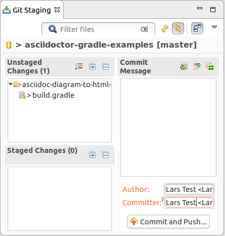
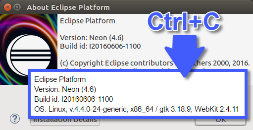

Instructions
The title should be short and snappy, written in sentence case, and using "headlinese" (compressed style). The title should not use trailing punctuation and a unique id attribute on the <tr> HTML element (id is all-lowercase and hyphen-separated).
In the news description, tell users about changes they'll see in the UI. Tell component writers about changes they'll see at the client- and server-side APIs. Try to generate some excitement; save the boring details for the manual; be short and don't repeat yourself. The description should be complete sentences, with trailing punctuation.
Make the entry self-contained and mention API classes. Do not link to bugs and don't promote individuals or third-party products.
Use active voice (say "you", not "the user"), and follow other advice in the Topic Content section of the Eclipse Doc Style Guidelines.
Stick to the default font and size. Make command names (Quick Fix), keyboard shortcuts (Ctrl+1), and preference page paths (Preferences > General > Keys) bold.
Do not enclose the first paragraph of an item in <p></p> tags.
See entries in published news documents for correct examples. These published news entries have been already reviewed, while entries in the evolving document may still contain errors.
The Windows Snipping Tool actually saves to PNG on Windows 7 and can easily be used to crop and save screenshots:
- Arrange the windows for the shot
- Use the Windows Snipping Tool to capture part of the screen
- Use File > Save As to save the screenshot as a PNG
- Overlays such as red circles or boxes to call out details can be done using Microsoft Paint
Name the file in a way that is appropriate and specific to the item (e.g., key-bindings.png, rather than something generic like image.png). Use all lowercase letters in the image file name, including the ".png" file extension. As a separator, use hyphen "-" rather than underscore "_".
Put all the images in a sibling directory named "images".
This gives XHTML like:
<img src="images/foo-view.png" alt=""/>
Include a suitable alt attribute.
The alt text should be empty ("") if the image just illustrates the text.
Only use the alt text to add information that is not accessible if the page is rendered without images.
Don't write alt="Screenshot of the XY dialog". Blind users shouldn't have to skip useless repetitions.
If the alt attribute text cannot sufficiently replace the image contents
(e.g. for a screenshot that shows source code), then enclose the img element in a link
to a plain ".txt" file with the same name as the image:
<a href="images/foo-view.txt"><img ...
The images should be left-justified (as opposed to centered). Do not embed the width and height of the image.


On Linux and Mac the underline was removed, this gives you a few more pixels on Linux and removes a yellow line on Mac.





Along with windowing system information, the command can report additional info, where applicable, e.g. the gtk or the webkit version.
org.eclipse.osgi.services and replaced them with the necessary package imports.
Mostly org.osgi.service.event needed to be added to the imported packages. This was necessary to avoid a
uses constraint violation when replacing org.eclipse.equinox.ds with org.apache.felix.scr.
org.eclipse.equinox.event and org.eclipse.equinox.cm as they now provide
the corresponding osgi.service capability.
Additionally p2 capabilities are specified to be able to configure non-code dependencies that can be interpreted
by the p2 resolver.